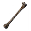
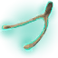

Masse-d'Os : emplacement, invocation et astuces
Masse-d'Os : emplacement, invocation et astuces
Masse-d'Os est un énorme amas d'os et de vase dans les Marécages, et le troisième boss. Beaucoup de joueurs échouent ici au début, car les épées et les flèches l'égratignent à peine. Avec une massue et une résistance au poison, le combat change du tout au tout.
| Biome | Marécages |
|---|---|
| Vie | 5 000 |
| Objet d'invocation |  10 × Os atrophié |
| Faible contre | Contondant, Glace |
| Résistant à | Perforant, Coupant, Feu |
| Insensible à | Poison |
| Butin |  Bréchet |
| Pouvoir de Déchu | 25 % de dégâts physiques subis en moins (contondant, coupant, perforant). Bloquer ne coûte plus d'endurance et t'en rend même un peu. |
Masse-d'Os : afficher les autels sur la carte
Comment trouver Masse-d'Os
L'autel de Masse-d'Os est un crâne géant posé dans les Marécages. Des pierres runiques rouges à l'intérieur des Cryptes enfouies marquent le plus proche sur ta carte.
Pour l'invoquer, jette 10 Os atrophiés dans le crâne. Tu en trouves dans les Cryptes enfouies, dans les coffres et dans les Tas de boue que tu creuses de toute façon pour le fer.
Préparation
- Prends une Massue de fer, améliorée au maximum. Masse-d'Os est faible contre les dégâts contondants et résiste aux dégâts coupants, perforants et de feu. Le Brise-cerf ou une Masse de fer font aussi l'affaire.
- Prépare de l'Hydromel de résistance au poison et emportes-en au moins trois ou quatre par joueur. Sans lui, son nuage de poison tue en quelques secondes.
- Porte une armure de fer améliorée ou l'ensemble de racines, et un Bouclier bandé ou mieux.
- Prends des Hydromels très revigorants et des hydromels d'endurance, et mange des Saucisses, de la Soupe de navets et d'autres plats du niveau des Marécages.
- Aplanis le sol autour du crâne à la houe pour ne pas te battre avec de l'eau jusqu'aux genoux : les sangsues y mordent, et l'endurance ne se régénère pas quand tu nages.
- Construis à proximité un petit abri couvert avec un lit, un feu et un portail, de préférence en hauteur.
Attaques
- Coup de poing : un large balayage qui porte plus loin qu'il n'y paraît et inflige des dégâts contondants et de poison. Bloque-le ou pare-le avec un bouclier solide.
- Nuage de poison : il se penche en arrière et crache un grand nuage qui reste en place. Sors-en tout de suite et attends qu'il se dissipe.
- Invocation : il s'arrache un morceau du corps et le lance. Des squelettes et des blobs apparaissent là où il tombe. Tue-les vite avant qu'ils ne t'encerclent.
Trucs et astuces
- Bois l'Hydromel de résistance au poison avant de l'invoquer et renouvelle-le quand l'icône se met à clignoter. Il dure 10 minutes.
- L'animation d'invocation est ta meilleure ouverture : il reste immobile plusieurs secondes pendant qu'il lance.
- Parer son coup de poing ne le déséquilibre pas, mais te protège entièrement. Frappe deux ou trois fois ensuite, puis recule.
- Les flèches de givre sont les seules flèches qui valent le coup contre lui. Si tu as déjà de l'obsidienne et des glandes gelées, elles permettent un combat à distance sans risque.
- Utilise le pouvoir d'Eikthyr pour sortir vite du nuage de poison, ou celui de l'Aîné pour la régénération supplémentaire.
- L'attaque de zone du Brise-cerf touche en même temps Masse-d'Os et les créatures qu'il invoque.
Récompense
Masse-d'Os lâche le Bréchet et son trophée. Avec le Bréchet équipé, tu détectes les veines d'argent cachées en Montagne, les trésors enfouis des Prairies et les Tas de boue des Marécages.
Son Pouvoir de Déchu est le meilleur pouvoir défensif du jeu. Beaucoup de joueurs le gardent pour tous les combats de boss suivants.